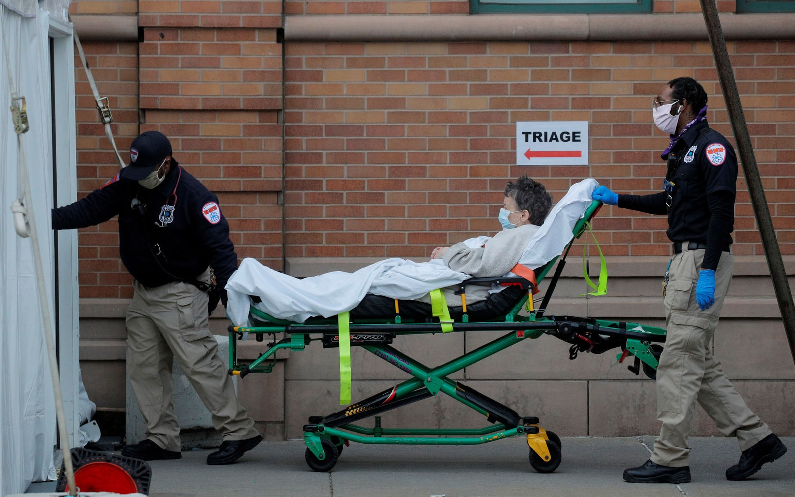

COVID-19 - Notícias
Primeira morte de Covid-19 no RJ completa um mês; compare como a doença matou em outras três localidades
Desde 17 de março, 276 pessoas morreram em decorrência do novo coronavírus no estado. Curvas brasileiras se assemelham à de Los Angeles, nos Estados Unidos, mas estão abaixo da de Nova York, onde a epidemia explodiu e já matou 11 mil pessoas.
Há um mês, o governo estadual anunciou a primeira morte por Covid-19 no Estado do RJ. Foi também quando ocorreu a primeira morte na capital. Em 30 dias, 219 pessoas morreram por causa do novo coronavírus na cidade do Rio, segundo o Painel Rio Covid-19, da Prefeitura. Em São Paulo, que anunciou a primeira morte em 17 de março, foram 563 mortos pela doença no mesmo número de dias, de acordo com a Secretaria Municipal de Saúde. Apesar da diferença de 344 mortes entre as duas metrópoles, especialistas afirmam que a evolução da doença é bem parecida em ambas. “As curvas são bastante semelhantes — embora em escalas diferentes”, afirmou Carlos Magno Fortaleza, epidemiologista da Universidade Estadual de São Paulo (Unesp), em Botucatu."
“É um crescimento ligeiramente desacelerado por conta das medidas de isolamento”, destacou.
“Esses dois municípios estão segurando a disseminação da Covid-19 para o resto do país. O que é feito ali em termos de isolamento social reflete em outras regiões”, explicou. Fortaleza lembrou que “não à toa” São Paulo e Rio de Janeiro são as cidades com o maior número de casos. “São as que recebem mais voos internacionais, da Europa especificamente”, detalhou.

As curvas de mortes carioca e paulistana também são similares à de Los Angeles, na Califórnia, na Costa Oeste dos Estados Unidos. Lá, nos 30 dias após o primeiro óbito, em 11 de março, o coronavírus matou 223 pessoas. “A explosão de casos em Nova York tem uma razão bastante clara: é um local com uma grande densidade demográfica e que não realizou a tempo as medidas de isolamento social”, explicou o epidemiologista. “Nós podemos traçar um paralelo. O Trump, nas primeiras semanas, teve um discurso negacionista — que nós vemos aqui no Brasil”, emendou Fortaleza. “O Brasil teve mais tempo para se preparar, realizou um isolamento social não ideal, mas razoável, nas grandes metrópoles e nos primeiros dias da pandemia. No entanto, esse isolamento começa a relaxar, e com esse relaxamento nós podemos sim ter um aumento explosivo de mortes e chegar a uma situação semelhante à dos Estados Unidos”, alertou.
Nova York tem características diferentes de Los Angeles. A densidade é menor na Califórnia, onde o carro se sobrepõe ao transporte público, mas as autoridades tardaram a agir. Vítor Sudbrack, físico da Unesp e integrante do Observatório Covid-19 BR, que reúne especialistas de outras seis universidades, atenta para o fato de que Los Angeles registrou a primeira morte em 11 de março, três dias antes de Nova York, mas tem contido a doença. “De populações mais jovens e condições de hospitalização melhores, se espera um tempo de duplicação maior”, diz Sudbrack. Tempo de duplicação é uma das formas de medir a velocidade de uma pandemia. O observatório estima que o número de mortos pela Covid-19 dobre nos EUA e no Brasil a cada seis dias — no início da crise, os óbitos duplicavam a cada dois dias.
Covid-19: Bolsonaro torce para que país nunca saiba número exato de mortos
Não sabemos a quantidade de mortos produzida pelo coronavírus em território nacional e talvez nem venhamos a saber - para alívio do presidente da República. Os 2.347 óbitos registrados até este sábado (18) são apenas um retrato atrasado e imperfeito da situação em que estamos. Se há uma fila de vítimas fatais cujas amostras esperam para serem analisadas, outras tantas nunca vão ostentar em seus atestados a causa real de suas mortes porque não houve coleta pela escassez de testes.
Pesquisadores do Observatório Covid-19 apontaram ao UOL que, na última quarta (15), quando o país registrava oficialmente 1.736 mortes, o número real estaria entre 3.800 (em uma projeção conservadora) e 15.600 (em uma mais pessimista). E o governo de Pernambuco, só para citar um exemplo fora do eixo Rio-São Paulo, ao montar uma força-tarefa para coletar sangue das pessoas mortas por problemas respiratórios, fez a letalidade dar um salto.
A situação, que traz angústia para famílias (que nunca saberão o motivo do falecimento) e desespero a gestores públicos e profissionais de saúde (que estão trabalhando às escuras para tratar pacientes e planejar o enfrentamento da crise), é um alento para Jair Bolsonaro. Pois a narrativa que tenta vender é que o grande inimigo do país não é uma pandemia assassina transmitida por contato social, mas as ações de governadores e prefeitos para reduzir a velocidade de contágio e, portanto, evitar o colapso do sistema de saúde.
Como haverá mais empregos perdidos e negócios fechados do que pessoas mortas, ele aposta na minimização da questão
sanitária a fim de garantir que não comecem a lhe servir café frio antes de outubro de 2022.
Claro que seu governo apresentou com atraso e de forma insuficiente medidas para garantir alimento aos trabalhadores informais,
reposição e complemento salarial aos formais e apoio a micro e pequenas empresas, mas ele convenientemente se esquece disso.
Culpa apenas quarentena e não sua própria lentidão.
As hordas que realizam carreatas com buzinaços em frente a hospitais e travam a passagem de ambulâncias, pedindo o retorno à normalidade por decreto (como se o vírus respeitasse o Diário Oficial), provavelmente só se importam com mortos se eles têm seu sobrenome. Mas a maioria racional da população consegue ponderar dados concretos na balança da vida. Se tivéssemos números de óbitos reais, dificilmente o apoio à quarentena estaria caindo (em duas semanas, foi de 76% para 68%, de acordo com o Datafolha). Por mais duro que seja o impacto econômico deste momento, é difícil ignorar o problema quando ele deixa o anonimato e ganha rosto conhecido - o instituto de sobrevivência é algo po.
Sobre a autora deste site
Possui graduação em Engenharia de Computação e mestrado em Engenharia Elétrica e de Computação, adora programar e atualmente têm focado seus estudos e projetos nas áreas de Data Science e Machine Learning. Têm como interesses pessoais música, jogos e matemática. Você pode encontrar um pouco dos projetos já realizados pela autora em seu Github e acompanhar um pouco do seu perfil profissional no Linkedin